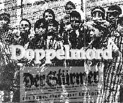

|
Doppelmord
von Dr. Rolf Kornemann
Die Arisierung von Immobilienvermögen und die Schachtung
von Mietern im Dienste der Judenvernichtung

"Die Fesseln der gequälten Menschen sind aus Kanzleipapier".
Franz Kafka
Es hat nicht nur der getötet, der zugeschlagen hat, sondern auch der,
der zum Ausfüllen von Formularen zwang. Insoweit kann man von Doppelmord sprechen:
Vor der physischen Auslöschung lag der ökonomische Mord.
Dr. Rolf Kornemann, Geschäftsführer der Bausparkasse
in Ludwigsburg führt in seinem Referat Teile der
bisher kaum aufgearbeiteten antijüdischen Vermögens- und Wohnungspolitik der Nazis auf.
Er zeigt auf, wie dem Juden vor seiner physischen Vernichtung sein Beruf, seine Heimat
und sein Eigentum genommen wurde, den reibunglos funktionierenden administrativen
Vernichtungsapparat der Nazis.
Wer Interesse an einer gedruckten Ausgabe hat, kann diese kostenlos erhalten:
Herr Dr. Rolf Kornemann
Geschäftsführer der Bausparkasse GdF Wüstenrot
Wüstenrot-Haus
71630 Ludwigsburg
Deutschland
E-Mail: 101473.475@compuserve.com
Seitenanfang
|